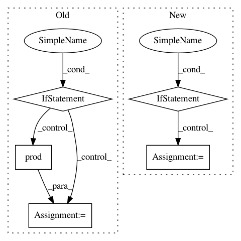

a21861f99e3dc4b778fd776b3e8e00dbaee988ca,common/models/encoder/blstm_cnn_specaug.py,,make_net,#,12
Before Change
}
// Add encoder BLSTM stack.
if len(time_reduction) > num_layers - 1:
time_reduction = [int(numpy.prod(time_reduction))]
src = "conv_merged"
opts = {"n_out": lstm_dim, "L2": l2} // type: Dict[str, Any]
if rec_weight_dropout:
opts.setdefault("unit_opts", {})["rec_weight_dropout"] = rec_weight_dropout
After Change
}
// Add encoder BLSTM stack.
if isinstance(time_reduction, int):
n = time_reduction
time_reduction = []
for i in range(2, n + 1):
while n % i == 0:
time_reduction.insert(0, i)
n //= i
if n <= 1:
break
assert isinstance(time_reduction, (tuple, list))
while len(time_reduction) > num_layers - 1:
time_reduction[:2] = [time_reduction[0] * time_reduction[1]]
src = "conv_merged"
In pattern: SUPERPATTERN
Frequency: 4
Non-data size: 5
Instances
Project Name: rwth-i6/returnn-experiments
Commit Name: a21861f99e3dc4b778fd776b3e8e00dbaee988ca
Time: 2021-03-27
Author: albzey@gmail.com
File Name: common/models/encoder/blstm_cnn_specaug.py
Class Name:
Method Name: make_net
Project Name: keras-team/keras
Commit Name: c913b6da92f6ab9a3f4c897caa4085e782a14680
Time: 2018-09-11
Author: rvinas@users.noreply.github.com
File Name: tests/keras/backend/reference_operations.py
Class Name:
Method Name: prod
Project Name: geomstats/geomstats
Commit Name: a2e39e8a3c0586ce0c1cca407d1738565a75e705
Time: 2020-01-16
Author: ninamio78@gmail.com
File Name: geomstats/backend/pytorch_random.py
Class Name:
Method Name: choice
Project Name: adalca/neuron
Commit Name: 9bcf05406490ca72b698db24636e5f2a51a5c82a
Time: 2017-06-14
Author: adalca@sumac.csail.mit.edu
File Name: neuron/metrics.py
Class Name: CategoricalCrossentropy
Method Name: loss